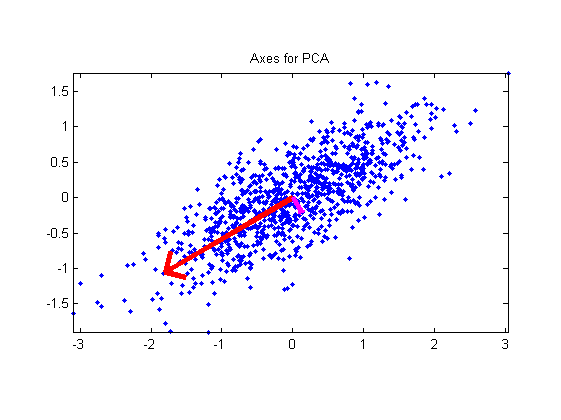
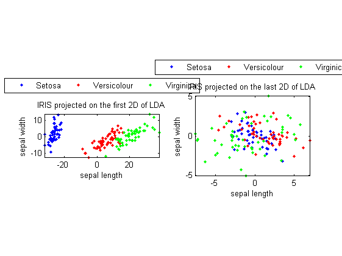

pca
Principal component analysis (PCA)
Contents
Syntax
- data2=pca(data)
- data2=pca(data, eigVecNum)
- [data2, eigVec, eigValue]=pca(...)
Description
data2=pca(data) returns the results of PCA (principal component analysis)
- data: a data matrix, where each column is a data vector, or a dataset object
- data2: output data matrix after projection, or output dataset object
data2=pca(data, eigVecNum) uses the specified no. of eigenvectors for PCA
- eigVecNum: No. of selected eigenvectors
[data2, eigVec, eigValue]=pca(...) returns extra info:
- eigVec: Each column of this matrix is a eigenvector of dataMat*dataMat', sorted by decending order of the corresponding eigenvalues
- eigValue: Eigenvalues of (dataMat*dataMat') corresponding to eigVec
Example
Demo for 2D data
dataNum=1000; j=sqrt(-1); data=randn(1,dataNum)+j*randn(1,dataNum)/3; data=data*exp(j*pi/6); % Rotate 30 degress data=data-mean(data); % Zero mean'ed plot(real(data), imag(data), '.'); axis image; data=[real(data); imag(data)]; [data2, v, eigValue]=pca(data); v1=v(:, 1); v2=v(:, 2); arrow=[-1 0 nan -0.1 0 -0.1]+1+j*[0 0 nan 0.1 0 -0.1]; arrow1=2*arrow*(v1(1)+j*v1(2))*eigValue(1)/dataNum; arrow2=2*arrow*(v2(1)+j*v2(2))*eigValue(2)/dataNum; line(real(arrow1), imag(arrow1), 'color', 'r', 'linewidth', 4); line(real(arrow2), imag(arrow2), 'color', 'm', 'linewidth', 4); title('Axes for PCA');
Demo for the iris dataset
DS=prData('iris'); dataNum=size(DS.input, 2); DS2=pca(DS); figure; subplot(1,2,1); dsScatterPlot(DS2); title('IRIS projected on the first 2D of LDA'); DS2.input=DS2.input(3:4, :); subplot(1,2,2); dsScatterPlot(DS2); title('IRIS projected on the last 2D of LDA');
Warning: data dim is larger than 2. The plot is based on the first 2 dimensions